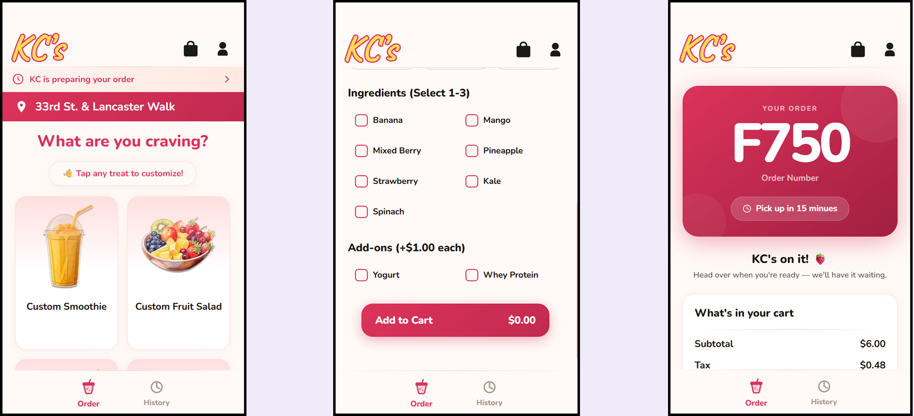
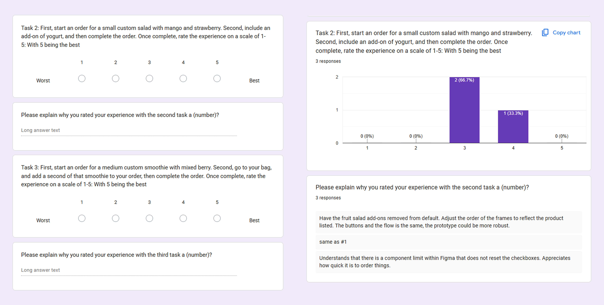
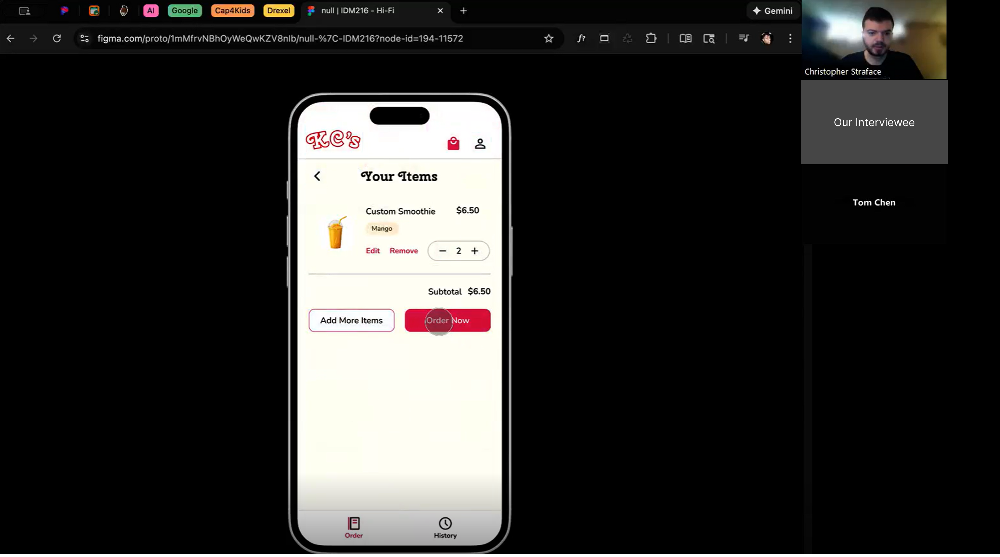
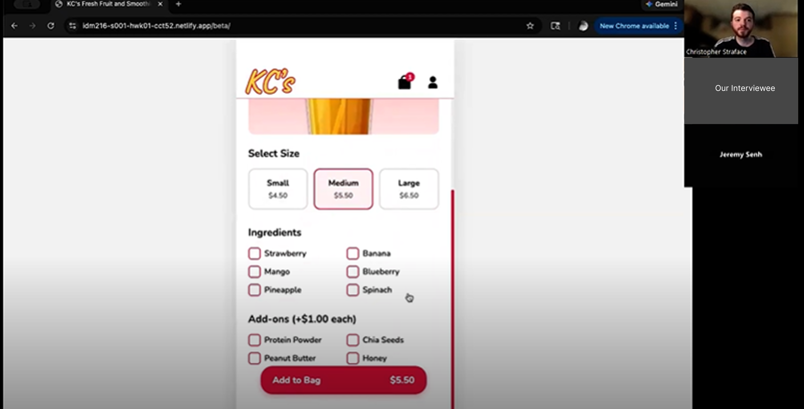
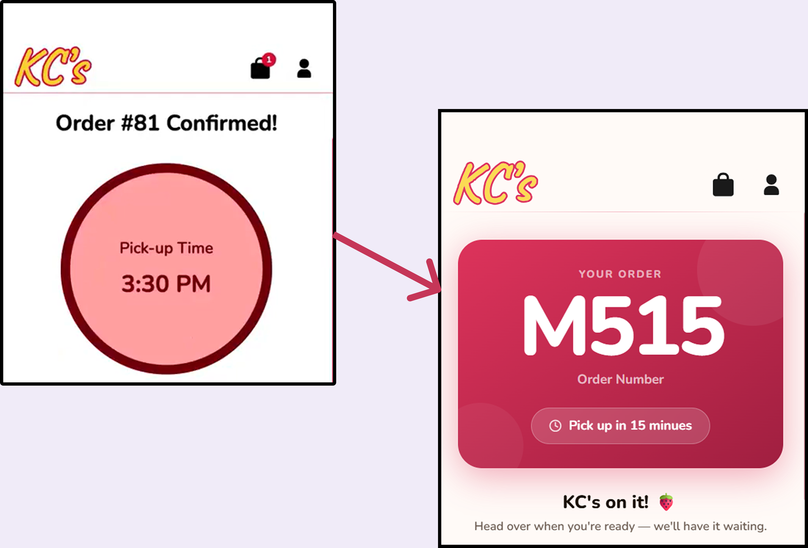
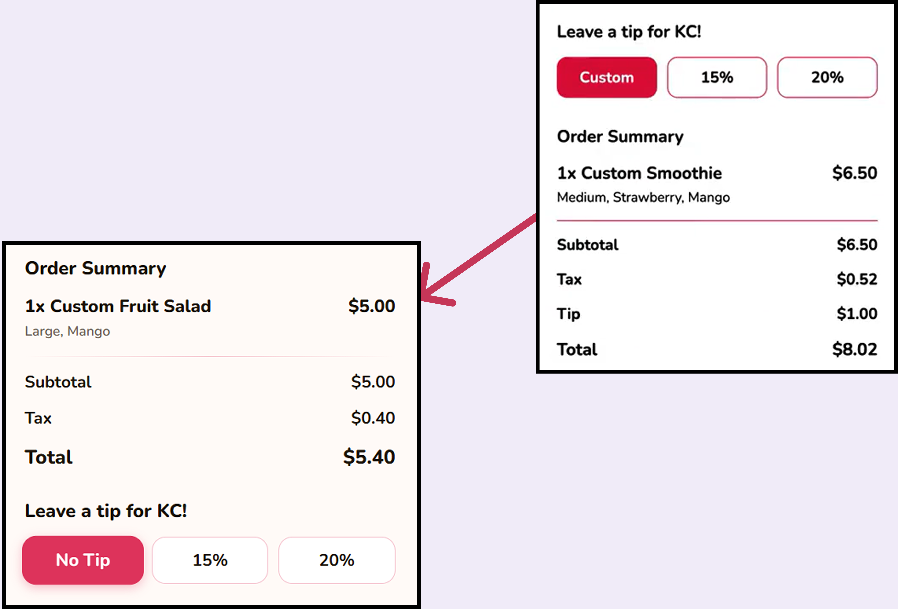
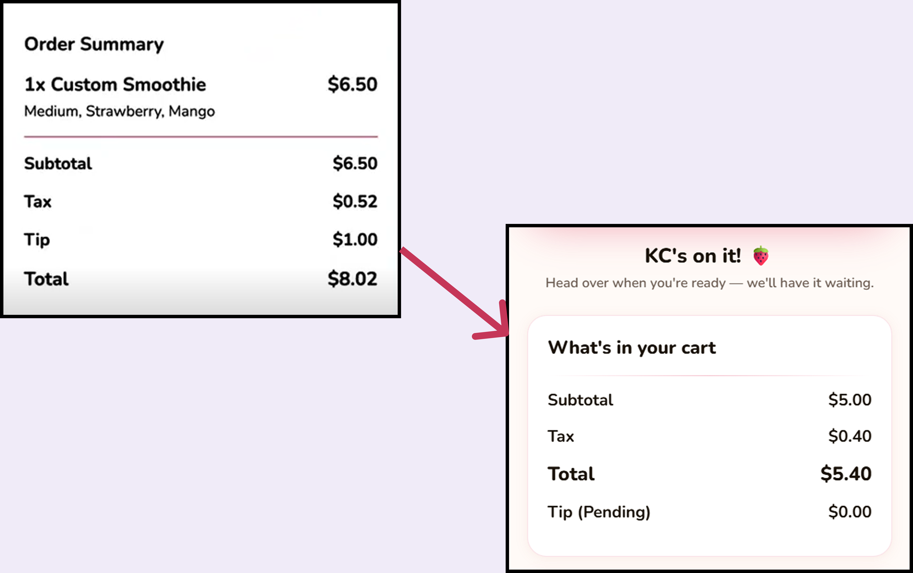

Introduction
On a team of four, we were tasked with taking a prototype design of a food truck ordering app completed in a previous class and translate it into a fully functioning coded version with PHP menu integration. For my role, I was one of our designers and one of our coders. After we made additional changes to \our given prototype design, I got a jumpstart coding some microinteractions to be later imported into the coded build of the project. I then had two rounds of user interviewing, interviewing three users each time, and we took our feedback from them and made the according changes to our final build. The eventual final build reflects those changes, and presents an optimized user flow that creates the perfect experience for users ordering from the KC’s Fresh Fruit and Smoothies truck.
Background
In this project, we had 10 weeks to create a fully developed version of one of the designed prototypes for a food truck ordering app from IDM215. We chose a prototype design for KC’s Fresh Fruit & Smoothie. This developed version should allow users to view the full menu, submit an order, and be able to edit and remove their order. This was a team-based project, where I filled the role of one of the designers and coders.
The Problem & Goals
The Problem
Need to translate the prototype into a fully functional app that meets user needs and business objectives.
Goal 1
Fix any bugs or issues in the initial prototype.
Goal 2
Collect user feedback and iterate on the established design.
Goal 3
Fully code and implement the final project with all features and functionality.
How We Got There
[Introduce your process. What was your role on the team? What were the major phases of work, and what were you specifically responsible for vs. the group?]
My role on the team was as a designer and as a coder. As a designer, along with helping with the overall design of our final product, I primarily contributed to the user research portion of the process, collecting feedback and relaying it to my group so we know what changes needed to be made. As a coder, I helped program some of the microinteractions that went into the final project, enhancing the overall experience and translating some of our key design ideas into functioning code.
Based on our final design, I listed out the microinteractions that were already present in our design, and defined the details of those interactions. Then, using those definitions as a template, I recreated them in CodePen using HTML, CSS, and JavaScript, and made additional improvements to them. That way, they could be directly added to our project’s code with little changes needed to be made.
Below is one of the microinteractions I created in CodePen — the size selection buttons, used when selecting the size of a chosen menu item.
The second microinteraction I made was for the quantity selection buttons, which allow users to select how many of each item they want to order.
The third and final microinteraction I created was for the ingredient selection, which allows users to choose which ingredients they want in their chosen menu item.
Additionally, I also handled much of the interviewing process. Before these interviews were conducted, I first created a survey that would go along with each interview, outlining our questions and providing room to note down user feedback which we would review accordingly after each one.

Of course, after this was the interviews themselves. The first round of interviews we had was with three people, where we would do a Zoom video call, and have the participant share their screen after we sent them the web link to our latest build of our prototype. Then, we would relay our questions to them, and use the form to record their answers, and write down any additional notes and feedback that they had.

Following this, we made changes to our prototype based on the feedback we received from the first round of interviewing. After this, we immediately went back and did three more user interviews as a final guide towards how we should shape our final design, once the allotted weeks were coming to an end.

After these rounds of interviews, we had all of the information we needed to create the final version of our project, with sufficient user data from our interviewing. Once we analyzed the results and determined how to best take into consideration our feedback, we just had to implement them into our final product before our deadline.
Outcomes & Reflection
Our final design tackled some of our biggest suggestions from our interview feedback, and considerable changes were made to the final build to solve these problems and create one cohesive critical path. This build also contains full PHP integration, officially meeting all requirements asked from the project now that we have also translated the entire design into a functional, coded build.

Feature 01
One of these changes was to increase the size of our order number on the confirmation screen, which was a consistent issue during user testing. Our final version now displays the number much larger and takes up more of the screen, making it easier for KC to view from the view of her truck’s window.

Feature 02
Another change we made was to our tip selection options. Now, there is an option to select “No Tip,” when before, users were forced to select a tip amount to complete the ordering flow. In our final build, this is no longer a problem, and users can choose not to tip while still being able to advance.

Feature 03
A consistent issue was that our build lacked some of the warmth and friendliness in its branding that had become well known of the truck’s owner, KC. To remedy this, we added in new text and emojis to lighten the experience and aim to make the user smile more. We also changed the color palette on some screens to feel warmer and less drab and monochromatic.
Final project: Link to final project →
Outcomes & Reflection
In conclusion, our team was able to meet all of the requirements for this project, and in ten weeks produced a functional, coded build of an ordering app for the KC’s Fresh Fruit & Smoothies truck. The build allows users to order everything off of the original menu, and uses PHP to track and retrieve data from a separate database which dynamically displays and updates that information. We received constant feedback during different stages of our project and were able to address each critique and deliver an optimized final build as a result.
Thanks to the collaboration between myself and my team members, we were able to complete this project and keep up with our many assigned tasks within the deadline. I believe I contributed well to my roles in this project, and if I could do anything differently, I would have changed my approach to the user interviews; While they lead to successful findings and changes, the interview process and the way I structured questions lead to some repeating statements. Nonetheless, this project provided an excellent opportunity to learn more about the professional design and development process, and my team and I have come out stronger in both regards as a result.